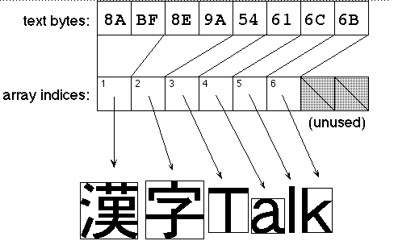

Legacy Document
Important: This document is part of the Legacy section of the ADC Reference Library. This information should not be used for new development.
Current information on this Reference Library topic can be found here:
ADC Home > Reference Library > Technical Notes > Legacy Documents > Text & Fonts >
Important: This document is part of the Legacy section of the ADC Reference Library. This information should not be used for new development.
Current information on this Reference Library topic can be found here:
|
Introduction
Every Macintosh developer needs to draw text in a
We'll start with a historical overview, which discusses the introduction of
font family description resources (
We will then deal with the Font/DA Mover and the built-in "Mover" of the Finder
in System 7. We discuss a number of not-so-well-known aspects of moving fonts
in and out of a suitcase file, and recommend that you altogether abandon the
resource type
Moving font files and suitcases becomes even easier in System 7.1, with its new
"Fonts" folder within the system folder. It is now possible, however, to have
several
The main body of this Note addresses how the Font Manager works in the
Determining the width of text, as required for line layout, is sometimes
trickier than you might think. We will document the effects of
Finally, this Note includes sample code that puts the Some FOND Background
Originally (Inside Macintosh Volume I, Chapter 7), all font-related data
was contained in resources of type 128*(font number) + (font size)
contained the bitmap font strike, while the For aesthetic reasons, bitmap fonts for different sizes were usually designed with widths non-proportional to the point size. For example, the text "Show the difference in text widths" drawn with Courier 9 measures 170 pixels, whereas the same text drawn with Courier 18 measures 374 pixels, which is 10% more than you expect. (By the way, this is bad news for the ImageWriter printer driver. When "Best" mode (144 dpi) is selected and text in Courier 9 is to be printed, the printer driver uses Courier 18 to render the 9-point font size on the paper at twice the screen resolution, and obviously has big trouble compensating for the 10% difference in text width.) On the other hand, given that only integer character widths (in QuickDraw's 72 dpi units) are possible, proportional font scaling is compromised anyway. Accumulated rounding errors in text measuring, particularly for scaled fonts, contribute to the headaches of many Macintosh programmers. The computed text widths (vital for positioning text precisely and for line layout algorithms to justify text) sometimes change quite abruptly when the user removes or adds certain font sizes.
The introduction of the LaserWriter, and the success of Macintosh in the
desktop publishing arena, required an extension of the original Font Manager
architecture. This extension is based on the concept of "font family
description" resources of type
The
Since Apple originally intended fonts to be referenced by their font family
numbers, DTS attempted to register those numbers (see Inside Macintosh
Volume I, page 219 and Volume IV, page 31). This failed--not only because the
number of fonts registered grew greater than the number of font family numbers
available, but also because the Font/DA Mover (version 3.8, shipped with System
6), and the "Mover" built into the System 7 Finder resolve conflicts between
font IDs (which happened anyway!) by renumbering the fonts on-the-fly. There is
no font ID registration any more--except for the very special case of Japanese
Kanji As early as April 1988, M.IM.FontNames recommended the use of font names rather than font family numbers. Since then, the recommendation has been reinforced in Inside Macintosh Volume VI, page 12-16. Fortunately, most applications have been good about following this recommendation. Unfortunately, some exceptions remain, even in Apple's own software. QuickDraw Pictures created without 32-Bit QuickDraw refer to fonts by font family number only!
For obvious reasons of upward compatibility (to maintain existing fonts, and to
avoid reflowing of existing documents), the introduction of Moofing Fonts
The Font/DA Mover utility has evolved into version 4.1, which knows about
Given the combinatorial explosion of all imaginable situations with
It is fairly easy, using System 7 and ResEdit, to merge two font families (named, for example, "myFont" and "myFont italic") into one. This way, QuickDraw will automatically use the pre-designed italic font strike instead of creating one algorithmically. Follow these convenient steps:
Version Numbers
The
Currently, values 0...3 may appear in the
Version 0: Usually indicates that the
Version 1: Obviously indicates the first version when
Version 2: Corresponds to the extension of the
Version 3: The
This brings up an annoying fact. All measurement values (referring to a
hypothetical 1-point font) in the
Where are all my FONDs in System 7.1?
The Fonts folder in System 7.1 accepts both System 7 font files (creator
Font families are considered different if their names (the resource names of
the
Consequently, the information about all available font strikes belonging to the
same font family may now be scattered across more than one
or, for C programmers:
This function finds the next
before calling In the Heart of the Font ManagerSwapping Fonts
As stated in Inside Macintosh, there is only one contact between
QuickDraw and the Font Manager: the
Responding to a font request is a lot of work, and Inside Macintosh Volume I, page 220 documents the Font Manager's choice when a font of the requested size is not available. However, some consequences or additional features have occasionally been a surprise to developers (and users as well). Scaling Factors in
|
|
Warning: |
The default value of outlinePreferred is FALSE. If you have bitmap fonts for
Palatino 12 and Palatino 14 in your system as well as a Palatino TrueType font,
then requests for Palatino 12 or Palatino 14 are fulfilled with the bitmap
fonts, but requests for any other size are fulfilled with the TrueType font. In
particular, if you (or, for example, a printer driver) need Palatino 12 scaled
by 2, the Font Manager will actually look for Palatino 24 and return the
outline font, regardless of the setting of outlinePreferred. Even if you wanted
the bitmap font doubled for exact "what-you-see-is-what-you-get" text
placement, you're out of luck--you get the TrueType font, which may have very
different font metrics or character shapes.
If the Font Manager uses an outline font to fulfill a given font request, the
IsOutline function returns TRUE. Interestingly, this does not imply that
RealFont returns TRUE as well. If the text size is smaller than the value
lowestRecPPEM ("smallest readable size in pixels") in the 'head' font header in
the TrueType font (see The TrueType Font Format Specification, version
1.0, page 227), then RealFont returns FALSE!
When the Font Manager walks the font association table of a 'FOND' to look for
a font strike of a specified size and style, it stops at the first font of the
right size. Only if you requested a stylistic variant (like bold or italic)
does it take a closer look at the fonts of the same size. It does this by
putting weights on the various style bits (for example, 8 for italic, 4 for
bold, 3 for outline) and choosing the font strike whose style weight most
closely matches the weight of the requested style. All this is fine when only
bitmap fonts are available. With the presence of TrueType outlines, however,
the results are not always as expected, depending on the font configuration
installed.
Let's look at a few examples:
Example 1: Let's suppose you have the bitmap font Times 12 (Normal) and
the TrueType fonts Times (Normal), Times Italic and Times Bold in your system.
If you request Times 14 Italic or Times 14 Bold, it's rendered from the Times
Italic or Times Bold TrueType fonts. However, if you ask for Times 12 Italic
or Times 12 Bold, and your system has the default setting of outlinePreferred =
FALSE, the Font Manager decides to take the Times 12 bitmap and let QuickDraw
Example 2: Let's suppose you want to draw big, bold Helvetica characters and there are no existing bitmaps for the size you want. If the Helvetica Bold TrueType outlines are available, the Font Manager chooses them and the only surprise in text rendering will be a pleasant one. If there is no Helvetica Bold TrueType font, however (like in the machine of your customer, who kept only the normal Helvetica TrueType font in his system), then the characters are rendered using the normal Helvetica outlines and, in a second step, QuickDraw applies its horizontal 1-pixel "smearing" to simulate the bold stylistic variant. The result is very different (and rather an unpleasant surprise).
Example 3: Admittedly, this is less likely (but it has happened). Let's suppose somebody decides to rip the Times TrueType outline out of the System file (don't ask me why--I don't know). He forgets to take the Times Italic TrueType outline away as well. The next time he draws text in Times (Normal), in a size for which there is no bitmap font (or if outlinePreferred = TRUE), the Font Manager goes for an 'sfnt', and the text shows up in italic (what a surprise!).
Unfortunately, given the current implementation of the Font Manager, there are
no solutions to the problems illustrated above--other than asking users of your
application to install the fonts you recommend. The only way to anticipate
these potential surprises from within your application is to look into the
'FOND's font association table. Remember that this requires to loop through
GetNextFOND calls on system versions 7.1 and later! You can't depend on the
IsOutline function because it returns TRUE as soon as the Font Manager stops at
an 'sfnt', in its first pass through the font association table--regardless of
subsequent stylistic variations. This means, for example, if you ask for
Helvetica Bold and IsOutline returns TRUE, you don't know if you got the
Helvetica Bold TrueType font or if QuickDraw "smeared" the Helvetica (Plain)
TrueType font.
Text measuring (for example, for precise text placement in forms with bounding
boxes) and most line layout algorithms for justified text rely heavily on the
character widths contained in the global width table. Given that under the
current font architecture, we may easily have three or more different width
tables for the same font specification (the non-proportional integer widths
attached to the 'NFNT', the fractional widths contained in the 'FOND', and the
fractional widths provided by the 'sfnt'), it is important to understand where
the widths come from in any case.
Since SetFractEnable was introduced (Inside Macintosh Volume IV, page 32
and Volume V, page 180), its setting TRUE or FALSE was supposed to give
predictable effects. If it's FALSE, the Font Manager takes the integer widths
from the 'NFNT'; if it's TRUE, it takes the fractional widths from the 'FOND'.
Unfortunately, there are some additional details and side effects that are not
well known.
ffFlags field in the 'FOND' (see Inside Macintosh Volume IV pages 36 and 37). If it is set (like it is for Courier), the fractional widths from the 'FOND' are never used.SetFractEnable is TRUE and you request a stylistic variation like bold or italic, the Font Manager looks at bits 12 and 13 of the ffFlags field to decide how different widths or extra widths for the stylistic variants have to be used. What it decides is documented in the "Font Manager" chapter of Inside Macintosh Preview, located on the Developer CD Series discs.SetFractEnable. Passing TRUE to SetFractEnable disables some of the LaserWriter driver's line layout features, assuming that the programmer intends to control text placement manually. Explicitly passing FALSE to SetFractEnable achieves different results than using the default value of FALSE--Font Substitution behaves differently, for example. These effects are sometimes Not What You Wanted.SetFractEnable was not recorded in pictures. This affects the line layout of text reproduced through DrawPicture if the picture was created with fractional widths enabled.
In systems with TrueType, quite naturally the widths always come from
the 'sfnt' when the Font Manager uses a TrueType font. If fractEnable is
FALSE, hand-tuned integer character widths for specific point sizes come from
the 'hdmx' table in the 'sfnt'. If fractEnable is FALSE and no 'hdmx' table is
present or it contains no entries for the desired point size, the fractional
character widths from the 'sfnt' are rounded to integral values.
The routines SpaceExtra (Inside Macintosh Volume I, page 172) and
CharExtra (Inside Macintosh Volume V, page 77; available only in color
GrafPorts) are intended to help you draw fully justified text. This works fine
on the screen, but not all printer drivers are smart enough to use these
settings appropriately under all circumstances. In particular, if you pass TRUE
to SetFractEnable, or if you turn the LaserWriter driver's line layout
algorithm off (by means of the picture comment LineLayoutOff; see Macintosh
Technical Note #91), or if font substitution is enabled and actually occurs, it
is better not to rely on SpaceExtra and CharExtra when printing fully justified
text. Instead, keep the LaserWriter driver's line layout adjustments off, and
calculate the placement of your text (word by word, or even character by
character) yourself.
TrueType fonts came to the Macintosh together with seven new Font Manager
routines (as documented in Inside Macintosh Volume VI, Chapter 12). The
OutlineMetrics function is certainly the most sophisticated of these, and
sample code illustrating its usage may be helpful. The following procedure
DrawBoxedString assumes that the new outline calls (Inside Macintosh
Volume VI, Chapter 12) are available, and that IsOutline returns TRUE for the
current port setting.
The procedure uses the Script Manager call CharByte (see Inside Macintosh Vol.
V-306, and Vol. VI, 14-45 and 14-114) to deal with double byte text. The
indices in the arrays for advance widths, left-side bearing and bounding boxes
correspond to glyphs, not bytes in the input text stream. Figure 1 illustrates
this for the bounding box information returned when the eight text bytes
representing "KanjiTalk" on a Japanese System are passed to OutlineMetrics. The
TrueType font shown is HeiseiKakuGothic.

Figure 1. Array Indices in OutlineMetrics
PROCEDURE DrawBoxedString(pt: Point; s: Str255);
{ Draw string s at pen position (pt.h, pt.v), and show each character's bounding box. }
CONST
kOneOne = $00010001;
VAR
advA: FixedPtr;
lsbA: FixedPtr;
bdsA: RectPtr;
err,i,yMin,yMax,leftEdge,temp: Integer;
numer,denom: Point;
advance,lsb: Fixed;
r: Rect;
BEGIN
numer := Point(kOneOne);
denom := Point(kOneOne); { unless you want to draw with scaling factors
.... }
MoveTo(pt.h,pt.v);
DrawString(s);
{ This is for the pleasure of your eyes only -- in practice, you would probably }
{ first look at the metrics, and then decide where and how to draw the string! }
advA := FixedPtr(NewPtr(Length(s) * SizeOf(Fixed)));
lsbA := FixedPtr(NewPtr(Length(s) * SizeOf(Fixed)));
bdsA := RectPtr(NewPtr(Length(s) * SizeOf(Rect)));
{ Please, check for NIL pointers here! }
err := OutlineMetrics(Length(s),@s[1],numer,denom,yMax,yMin,advA,lsbA,
bdsA);
advance := 0;
i := 1; { counts bytes of text }
REPEAT
{ Add accumulated advanceWidth and leftSideBearing of current glyph }
{ horizontally to starting point. }
leftEdge := pt.h + Fix2Long(advance + lsbA^);
r := bdsA^; { The bounding box is in TrueType coordinates. }
temp := r.bottom; { We need to flip it "upside down". }
r.bottom := - r.top;
r.top := - temp;
OffsetRect(r, leftEdge, pt.v);
FrameRect(r); { This is the glyph's bounding box. }
advance := advance + awArray^; { avoid cumulation of rounding errors }
{ Now, bump pointers for next glyph. }
bdsA:= RectPtr(ord4(bdsA) + 8);
advA:= FixedPtr(ord4(advA) + 4);
lsbA:= FixedPtr(ord4(lsbA) + 4);
IF CharByte(@s[0], i) = smSingleByte THEN
i := i + 1
ELSE { s[i] is first byte of a 2-byte character }
i := i + 2;
UNTIL i > Length(s);
DisposPtr(Ptr(advA));
DisposPtr(Ptr(lsbA));
DisposPtr(Ptr(bdsA));
|
OutlineMetrics exists because many developers need pixel-precise information on
placement and bounding boxes, often on a glyph-by-glyph basis. Unfortunately,
there is no similar facility for text drawing with bitmap fonts. Worse, under
certain circumstances, italicized or shadowed (or both) bitmap fonts are
sometimes poorly clipped, particularly for scaled sizes. Cosmetic workarounds
include adding a space character to strings drawn in italic. You might also
draw the text off-screen first (in order to determine the bounding box of the
black pixels) and use CopyBits to copy the text onto the screen--but using
CopyBits for text is usually bad for printing.
The existing documentation on the FMOutput and global width table structures
(Inside Macintosh Volume I, page 227 and Volume IV, page 41) suggests
it's possible to devise a routine for determining a fairly precise text
bounding box for bitmap fonts. The procedure below, BitmapTextBoundingBox, is a
first attempt. It assumes that TrueType is unavailable, or that the IsOutline
call returned FALSE for the current port settings. While the returned bounding
box is not always "tight," be careful before modifying the algorithm and
shrinking the resulting bounding box--bitmap fonts just don't contain enough
precise information for an exact bounding box, and different bitmap fonts and
different sizes may require different adjustments.
PROCEDURE BitmapTextBoundingBox(s: Str255; numer,denom: Point; VAR box: Rect);
CONST
FMgrOutRec = $998; { FMOutRec starts here in low memory }
tabFont = 1024;
{ global width table offset for font record handle, see IM IV-41 }
TYPE
FontRecPtr = ^FontRec;
VAR
hScale,vScale: Fixed;
err,intWidth,kernAdjust: Integer;
xy: Point;
info: FontInfo; { only for StdTxMeas; we'll use FontMetrics }
fm: FMetricRec; { see Inside Macintosh, IV-32 }
fmOut: FMOutput;
h: Handle;
BEGIN
intWidth := StdTxMeas(ord(s[0]),@s[1],numer,denom,info);
{ calls FMSwapFont and everything - }
{ StdTxMeas returns possibly modified scaling factors numer, denom }
hScale := FixRatio(numer.h,denom.h);
vScale := FixRatio(numer.v,denom.v);
{ These are the scaling factors QuickDraw uses }
{ in "stretching" the available character bitmaps }
fmOut := FMOutPtr(FMgrOutRec)^;
{ has been filled by the most recent FMSwapFont, }
{ implicitly called by StdTxMeas }
SetRect(box,0, - info.ascent,intWidth,info.descent);
{ bounding box for unscaled plain text }
IF (italic IN thePort^.txFace) AND (fmOut.italic <> 0) THEN BEGIN
{ the following is heuristics ... }
box.right := box.right + (info.ascent + info.descent - 1) *
fmOut.italic DIV 16;
FontMetrics(fm);
HLock(fm.WTabHandle); { We'll point to global WidthTable. }
h := Handle(LongPtr(ord4(fm.WTabHandle^) + tabFont)^);
{ Be sure it's a handle to a 'NFNT' or 'FONT' ! }
kernAdjust := FontRecPtr(h^)^.kernMax;
OffsetRect(box, - kernAdjust,0);
HUnlock(fm.WTabHandle);
END;
IF (bold IN thePort^.txFace) AND (fmOut.bold <> 0) THEN
box.right := box.right + fmOut.bold - fmOut.extra;
IF (outline IN thePort^.txFace) THEN InsetRect(box, - 1, - 1);
IF (shadow IN thePort^.txFace) AND (fmOut.shadow <> 0) THEN BEGIN
IF fmOut.shadow > 3 THEN fmOut.shadow := 3;
box.right := box.right + fmOut.shadow;
box.bottom := box.bottom + fmOut.shadow;
InsetRect(box, - 1, - 1);
END;
{ Now scale the box (more or less) as QuickDraw would do. }
{ Note that some of the adjustments are based on trial and error... }
box.top := FixRound(FixMul(Long2Fix(box.top),vScale));
box.left := FixRound(FixMul(Long2Fix(box.left),hScale)) - 1;
box.bottom := FixRound(FixMul(Long2Fix(box.bottom),vScale)) + 1;
box.right := FixRound(FixMul(Long2Fix(box.right),hScale)) + 1;
GetPen(xy);
OffsetRect(box,xy.h,xy.v);
|
At the time when the original Font Manager architecture was designed, based on QuickDraw's hard-coded 72 dpi resolution, nobody could anticipate that some years later, the Macintosh would be used to tackle professional typesetting projects. Several advanced page layout applications managed to work around the "built-in" limitations, at high development costs, and some compatibility and performance problems. In many other cases, however, those limitations caused questions to DTS and unsatisfying compromises. This Note can't do much more than explain the state of affairs; the real solution to the problems must come from a redesigned foundation. TrueType leads the way and already fulfills many of the requirements; everything else is getting closer and closer.
Inside Macintosh, Volume I, Chapter 7, The Font Manager
Inside Macintosh, Volume IV, Chapter 5, The Font Manager
Inside Macintosh, Volume V, Chapter 9, The Font Manager
Inside Macintosh, Volume VI, Chapter 12, The Font Manager
New & Improved Inside Macintosh, Imaging: The Font Manager.
Developer CD Series disc, path Developer Essentials: Technical Docs: Inside Macintosh Preview
Macintosh Technical Note #91, Picture Comments--The Real Deal
Apple LaserWriter Reference, Chapter 2, Working With Fonts ( Addison-Wesley, 1988)
Adobe Technical Note #0091 (PostScript Developer Support Group), Macintosh FOND Resources
PostScript and Adobe are registered trademarks of Adobe Systems Incorporated.
Helvetica and Palatino are registered trademarks of Linotype AG and/or its subsidiaries.
Velocio is not a trademark of the author.
|
|
Acrobat version of this Note (156K). |
|